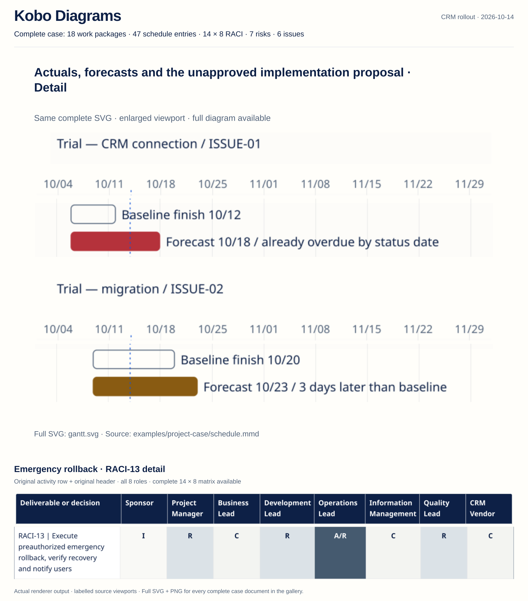
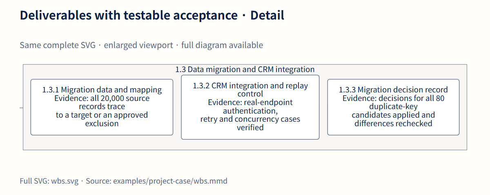
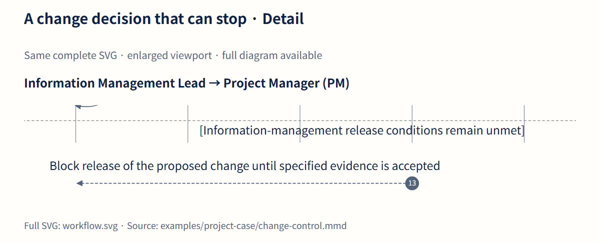
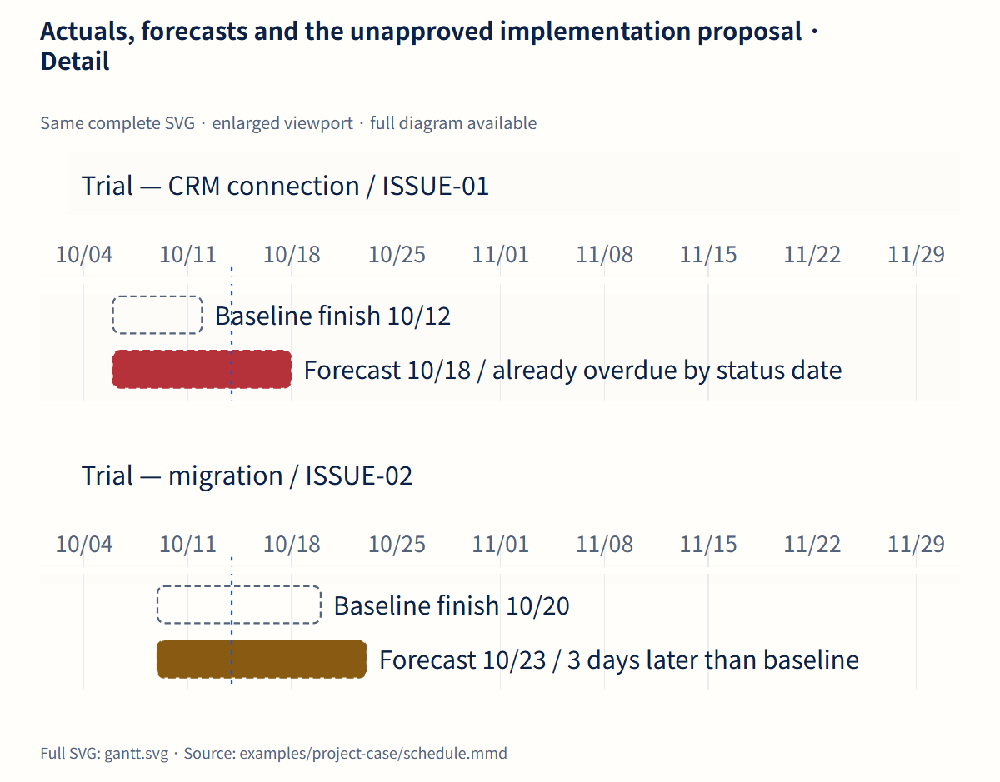
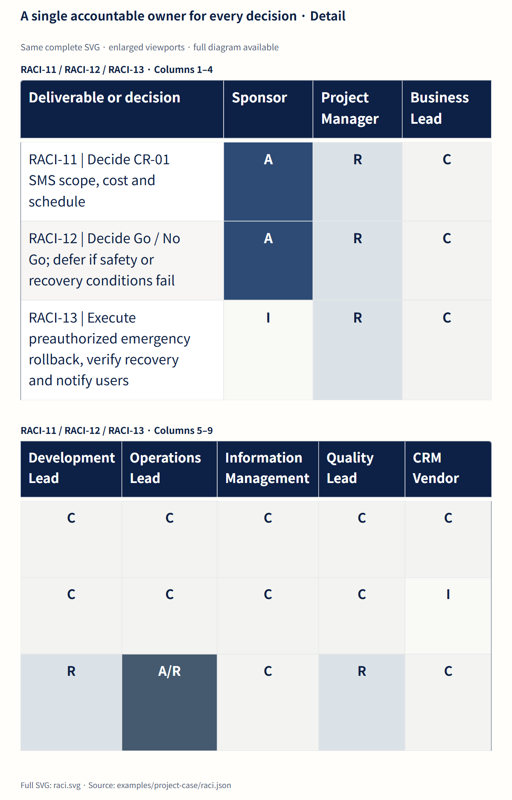
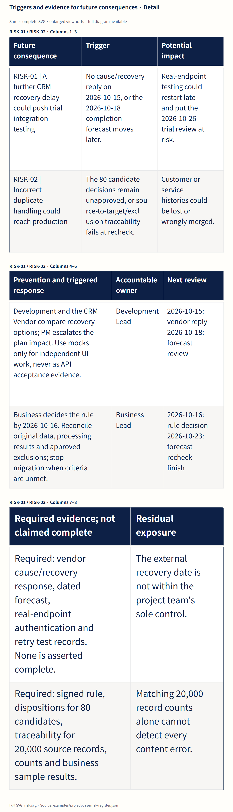
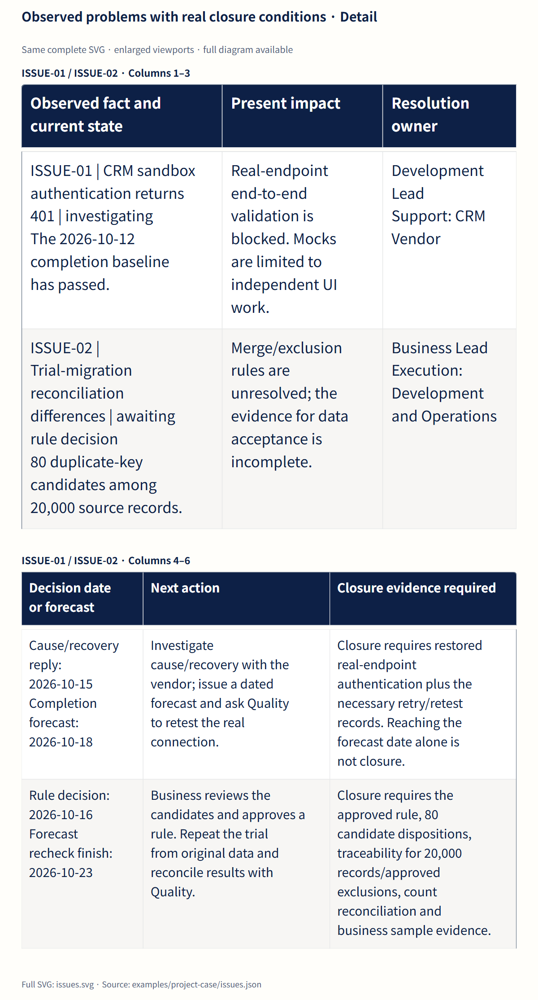

Scope, schedule variance, responsibility and unresolved decisions are shown together. Every figure uses the committed case source and the same renderer profile.
Fictional case · Status 2026-10-14 · Details are enlarged viewports, not simplified examples. Documentation

Deliverables with testable acceptance
What must be delivered, and what evidence makes each work package acceptable?
The complete source is present. Open the SVG or original-size PNG to inspect every label.
Detail — same SVG, enlarged viewport

The data/integration group links 20,000-record traceability, real-endpoint evidence and decisions for 80 duplicate candidates. Scroll horizontally when needed. This viewport does not replace the full diagram above.
A change decision that can stop
Can the SMS request proceed, and what happens when evidence, safety or resources are insufficient?
The complete source is present. Open the SVG or original-size PNG to inspect every label.
Detail — same SVG, enlarged viewport

Evidence and safety blockers prevent conditional approval from silently becoming implementation authority. Scroll horizontally when needed. This viewport does not replace the full diagram above.
Actuals, forecasts and the unapproved implementation proposal
Which dates are facts, which forecasts have slipped, and which future commitments still require approval?
The complete source is present. Open the SVG or original-size PNG to inspect every label.
Detail — same SVG, enlarged viewport

The API forecast is six calendar days later than baseline and already overdue as of 10/14; trial migration forecasts a three-day slip. Scroll horizontally when needed. This viewport does not replace the full diagram above.
A single accountable owner for every decision
Who can decide, who executes, and who must be consulted across the complete delivery lifecycle?
The complete source is present. Open the SVG or original-size PNG to inspect every label.
Detail — same SVG, enlarged viewport

Scope approval, Go / No Go and emergency rollback have different accountable owners and conditions. Scroll horizontally when needed. This viewport does not replace the full diagram above.
Triggers and evidence for future consequences
What could happen next, what triggers action, and what residual exposure remains after the response?
The complete source is present. Open the SVG or original-size PNG to inspect every label.
Detail — same SVG, enlarged viewport

Current authentication and data-quality issues become causal inputs to future schedule and production risks. Scroll horizontally when needed. This viewport does not replace the full diagram above.
Observed problems with real closure conditions
What is already wrong, who owns the next action, and what evidence would justify closing the item?
The complete source is present. Open the SVG or original-size PNG to inspect every label.
Detail — same SVG, enlarged viewport

The log records current blockers and insists that a forecast date or a count match alone cannot close an issue. Scroll horizontally when needed. This viewport does not replace the full diagram above.